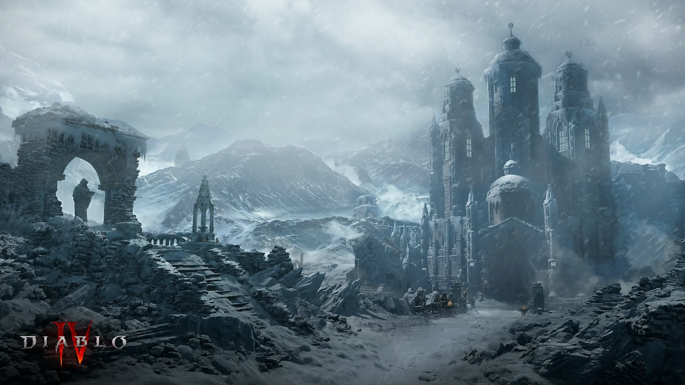

Region 01 · Nördliches Sanktuario
Zersplitterte Gipfel
Zwischen eisigen Pässen, verfallenen Klöstern und der befestigten Stadt Kyovashad bestimmt der Glaube das Überleben.
- Zentrum
- Kyovashad
- Landschaft
- Gebirge · Taiga · Schnee